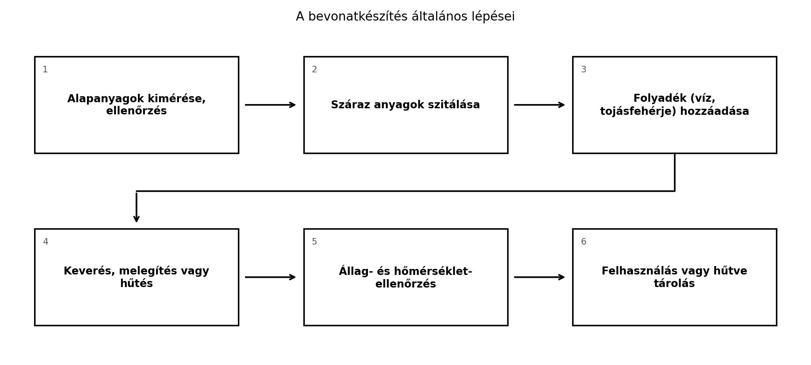

Amikor a mézeskalács-készítő reggel átnézi az előző nap sütött szíveket, több hibát is észrevehet: a felületük túl száraz, a díszítőcukor nem tapad meg, a máz megrepedt a hajlásnál. A bevonat ilyenkor nem csak dísz: védi a terméket a kiszáradástól, lezárja a felületét, és meghatározza, hogyan mutat a pulton, illetve hogyan viseli a csomagolást és a szállítást.
Szemléletes kép. Egy kis pékségben 100 db mézeskalács szív készül. A pék azt tapasztalja, hogy a díszítetlen darabok másnapra keményebbek és törékenyebbek, mint a mázzal bevontak. A máz vékony, összefüggő rétege csökkenti a nedvesség leadását, ezért a bevont termék béle tovább puha, hajlíthatóan rugalmas marad. A bevonat tehát technológiai védőréteg és fogyasztói minőség is egyben.
Definíció. A mézeskalács-bevonat olyan sütés utáni, vékony felületi réteg, amelyet a kihűlt vagy még meleg termékre viszünk fel, hogy a termék felületét védje, díszítse, fényét vagy ízét javítsa, és lehetővé tegye a további díszítést (például írókázást, cukorkép rögzítését).
A mézeskalács-iparban leggyakrabban használt bevonatcsoportok:
A választás attól függ, hogy a felület fénylő, matt, ropogós vagy puha legyen, kell-e utólagos díszítés, és a termék milyen hosszan áll majd a pulton.
Továbbvitt eredmény. Az itt leírt bevonatfajtákat a Mézeskalács-díszítés és mézeskalács-minták és a Mézeskalács csomagolása, tárolása, minőségvizsgálata és hibái alfejezetben használjuk fel: a sütésből kivett termék hőmérséklete, felületi nedvességtartalma határozza meg, hogy melyik bevonatot mikor és milyen hőmérsékleten lehet felvinni, a bevonat előtti hűtés pedig a cukormáz tapadását dönti el.
A zselatinos bevonat a mézeskalács hagyományos fényezője. Feladata, hogy a sütésből kivett, még meleg felületen vékony, rugalmas, fénylő réteget képezzen, és lezárja a pórusokat.
Definíció. A zselatinos fényező olyan híg, melegen folyékony oldat, amelyben az étkezési zselatint hideg vízzel duzzasztják, majd óvatosan melegítik, és esetenként cukorral vagy glükózsziruppal fényesítik.
Szabály. A zselatin oldódását soha nem gyorsítjuk forralással. A forralás roncsolja a kocsonyásító fehérjét, a fényező gyengén köt, és matt, repedező bevonatot ad. A duzzasztott zselatint legfeljebb 60–70 °C-ra melegítjük, amíg szemcsementesen fel nem oldódik (ellenőrizendő: a gyártó zselatin adatlapja, üzemi technológiai lap).
A legegyszerűbb munka a következő:
A fejezetben végig ugyanazt az ecsetelhető tanulási receptet használjuk: 8 g zselatin, 100 ml hideg víz, 92 g porcukor (összesen kb. 200 g fényező). A zselatin aránya kb. 8% a folyadékra; ennél töményebb (például 15–20%-os) oldat kocsonyás, ecsetnek túl sűrű, csíkos réteget adna, ezért azt csak hígítás előtti alapoldatként érdemes elképzelni (tanulási érték, ellenőrizendő: zselatin gyártói adatlapja). Az arányt a zselatin zselésítő ereje és a kívánt fényerő szerint módosítani kell (ellenőrizendő: a termékreceptúra).
Gyakorlat. A zselatinos fényezőt ecsettel a még meleg, frissen sült mézeskalácsra visszük fel; kihűlt darabot csak enyhe visszamelegítés után fényezünk. Az egyenletes réteg érdekében a felületet gyorsan, egy irányban kenik vagy mártják, és a felesleget lecsepegtetik.
Hiba. Ha a mézeskalács túl hideg, a zselatin azonnal megdermed a felületen, és vastag, ráncos réteget hagy. Ilyenkor a terméket enyhén vissza kell melegíteni, vagy a fényezőt kell folyékonyabb állapotban tartani; a gyártói és üzemi hőmérsékleti utasítás az irányadó.
A mézeskalács cukorbevonatai közül a fondant krémes, kenhető, opálos réteget ad; a máz hígabb, fényes, gyakran írókázásra és díszítésre való.
Definíció. A fondant túltelített (sűrűre főzött, majd lehűtött) cukoroldatból, folyamatos keveréssel kristályosított, apró cukorkristályokat tartalmazó, kenhető massza. A mézeskalácsnál a fondantot melegítve, hígítva használják, hogy vékony, fényes bevonatot adjon.
Definíció. Az írókázó cukormáz porcukorból, kis mennyiségű folyadékból (víz, citromlé, pasztőrözött tojásfehérje) készült, sűrű, de folyósra állítható massza, amely vékony vonalban kinyomva megtartja az alakját.
A mézeskalács díszítésére leggyakrabban tojásfehérjés cukormázt használnak. A korszerű üzemi gyakorlat a nyers tojásfehérje helyett pasztőrözött tojásfehérjét vagy tojásfehérje-port alkalmaz, mert a nyers tojás szalmonella-kockázatot hordoz.
Összetétel (tanulási példa):
| Nyersanyag | Mennyiség (g) | Megjegyzés |
|---|---|---|
| Átszitált porcukor | 1000 | alapanyag, csomómentes |
| Pasztőrözött tojásfehérje | 50 | vagy tojásfehérje-por feloldva |
| Citromlé | 15 | sav, fényesíti és stabilizálja a habot |
| Ivóvíz | 50–70 | az állag beállítására |
| Összesen | 1115–1135 | a kész máz tömege |
A mázt úgy állítjuk be, hogy a habverőről lefolyó máz éppen elsimuljon, de még ne terüljön szét. A porcukrot mindig átszitáljuk, mert a csomók eltömíthetik az írókázó zacskót, és a bevonat felülete göröngyös lesz.
Allergén. A cukormáz tojásfehérjét tartalmaz, ezért tojásallergén. A termék csomagolásán és a technológiai lapon tojást kell jelölni, tojásmentes változatnál a fehérjét vízzel és kevés citromlével helyettesítve is készíthetünk egyszerűbb, de kevésbé rugalmas mázat. A tojásfehérje nyers felhasználása tilos a HACCP-tervben rögzített hőkezelés vagy pasztőrözés nélkül (ellenőrizendő: az üzem HACCP-terve).
Előírás. A tojás és a belőle készült termék az 1169/2011/EU rendelet szerint jelölendő allergén. Ha a mázban színezéket használunk, annak engedélyezett élelmiszer-színezéknek kell lennie az 1333/2008/EK rendelet alapján, a megengedett maximális mennyiségben (ellenőrizendő: az adott színezék engedélye és az Élelmiszerkönyv előírásai).
A tojáshabos bevonat elsősorban lágy, pillekönnyű réteget ad, például mézeskalács-figurák díszítésére, de nem véd a kiszáradástól olyan jól, mint a cukormáz vagy a zselatin.
Szabály. A tojáshabos bevonathoz pasztőrözött tojásfehérjét (vagy tojásfehérje-port) használunk, amelyet porcukorral kemény habbá verünk, majd vékonyan a termékre kenünk. Nyers héjas tojás fehérjéje csak akkor használható, ha a bevont terméket utána a HACCP-tervben rögzített módon hőkezeljük (például a habbal bevont darabot szárítjuk vagy utósütjük – ellenőrizendő: időtartam és maghőmérséklet); hőkezelés nélkül fogyasztásra kész terméken nyers tojásfehérje nem engedhető meg, mert a hűtés a kórokozót nem pusztítja el. A kész habot hűtve kell tárolni, és rövid időn belül felhasználni, mert a tojásfehérje mikroorganizmus-növekedésre alkalmas közeg. HACCP szempontból a tojáshabos bevonat romlandó, hűtendő készítmény, a fel nem használt maradékot a HACCP-terv szerinti időn belül hűtve kell tartani, utána el kell különíteni (ellenőrizendő: az üzemi HACCP-terv, NÉBIH útmutató).
A csokoládés bevonat zsírtartalmú bevonat (ét-, tej- vagy fehér csokoládé), amely vízmentes környezetet igényel. A csokoládét kíméletesen, legfeljebb 45–50 °C-on olvasztjuk, majd a munka hőmérsékletére temperálva használjuk (étcsokoládé esetén gyakran 31–32 °C körül; pontos érték a gyártói adatlapon). A csokoládéba kerülő víz vagy gőz a masszát besűríti: összeugrik, szemcséssé, merevvé válik; a bevonat ezért csak száraz, kihűlt felületre vihető fel.
Allergén. A csokoládé bevonatok általában tejet és esetleg szóját tartalmaznak; a „mentes” jelöléshez ellenőrizni kell a csokoládé összetételét és a keresztszennyeződés lehetőségét.
A bevonatok készítése a mézeskalács-gyártás befejező művelete, de nem kevésbé fontos higiéniai és technológiai szempontból, mint a sütés. A kész bevonat közvetlenül érintkezik a fogyasztóval, ezért a munkaterületnek tisztának, az eszközöknek élelmiszer-ipari tisztaságúnak kell lenniük.
A bevonatkészítés lépéseit a következő folyamatábra foglalja össze:

A folyamat minden pontján arra kell figyelni, hogy a bevonat ne szennyeződjön idegen anyaggal, hajjal, a nyersanyagból származó allergénnel, és hogy a kész masszát a megengedett időn belül felhasználják.
Higiénia. A bevonat készítése előtt a dolgozó kezet mos, tiszta munkaruhát, hajhálót és kötényt visel. A munkapultot, habverőt, edényeket előzőleg fertőtlenítőszeres mosással kell megtisztítani. Romlandó bevonatot (tojáshabos, tejes, tejszínes krémes) csak a felhasználás előtt közvetlenül készítünk; a csokoládét száraz, vízmentes eszközökkel kezeljük.
HACCP. A bevonatkészítés kritikus pontja a tojásfehérje mikrobiológiai kockázata, a hőkezeletlenül alkalmazott zselatin oldat baktériumszaporodása és a nem megfelelő hőmérsékleten tárolt kész bevonat. A határértékek: pasztőrözött alapanyag, hűtve, legfeljebb 5 °C-on tárolva, a kész bevonat felhasználási ideje az üzemi HACCP-terv szerint (ellenőrizendő: a pékség HACCP-terve, NÉBIH jó higiéniai gyakorlat).
Gépbiztonság. Ha a cukormázat vagy a tojáshabot gépi habverővel készítjük, a gépet csak leállított, áramtalanított állapotban szabad tisztítani, a habverőt csak a forgó rész teljes megállása után szabad levenni. A gép védőburkolatát tilos eltávolítani működés közben.
Egy mézeskalács-tételhez 1,8 kg (1800 g) fehér írókázó mázt kell készítenünk. A fenti recept 1000 g porcukorhoz kb. 130 g folyadékhoz (50 g tojásfehérje + 15 g citromlé + 65 g víz) igazodik. Mennyi porcukrot és mennyi folyadékot mérjünk?
A máz össztömegének alapreceptje: 1000 g porcukor + 50 g tojásfehérje + 15 g citromlé + 65 g víz = 1130 g máz. Az átszámítási tényező:
A porcukor mennyisége:
A tojásfehérje, citromlé és víz mennyiségét ugyanígy kapjuk; a folyadékok összege kb. 207 g. A máz készítésekor a vizet utoljára adagoljuk, mert az állagot a hőmérséklet és a porcukor nedvességtartalma is befolyásolja.
Ellenőrzés: 1590 g + 207 g = 1797 g, azaz a kívánt 1800 g-hoz közel; a maradékot a pontos állagállítás vizével pótoljuk.
Egy üzemben a zselatinos fényezőt 25 g zselatinból, 120 ml vízből és 100 g porcukorból készítik. A pék azt tapasztalja, hogy a kész fényező túl sűrű, és a felületen csíkos marad. Hány ml vizet kell hozzáadni, hogy az oldat összes folyadéktartalma 150 ml legyen?
A jelenlegi folyadék: 120 ml. A kívánt 150 ml, tehát a hozzáadandó víz:
A hozzáadott vizet langyosan, keverés közben adagoljuk, és a fényezőt ezután ismét felmelegítjük 40–50 °C-ra, hogy folyékony maradjon.
Egy kis mézeskalács-műhelyben a hétvégi vásárra készült 200 db szív alakú mézeskalács. A pék a sütés utáni napon akarta bevonni a darabokat fehér cukormázzal, de a máz megszáradva megrepedt, és leválott a felületről. A hiba oka az volt, hogy a mázat túl sok vízzel, túl hígra készítette, és a mézeskalács felülete már teljesen kiszáradt.
A megoldás az lett, hogy a még be nem vont darabokat enyhén visszamelegítette, a mázat sűrűbbre állította, és a bevonást azonnal a máz elkészítése után végezte. Tanulság: a cukormáz állagát minden tételnél ellenőrizni kell, és a bevonást a termék hűlési és száradási állapotához kell igazítani.
Cél: zselatinos fényező és fehér írókázó cukormáz elkészítése, termékre vitele.
Eszközök és anyagok: digitális konyhamérleg, rozsdamentes edény, habverő, szita, ecset, írókázó zacskó vagy csőr, tiszta munkapult; zselatinpor, porcukor, pasztőrözött tojásfehérje, citromlé, ivóvíz.
Higiénia. A művelet előtt kezet mosunk, tiszta kötényt és hajhálót veszünk fel, ékszert nem viselünk. A munkafelületet és az összes eszközt fertőtlenítő hatású, élelmiszer-ipari tisztítószerrel lemossuk, majd tiszta vízzel öblítjük. A pasztőrözött tojásfehérjét a hűtőből közvetlenül a felhasználás előtt vesszük ki.
Gépbiztonság. Ha gépi habverőt használunk, ellenőrizzük a védőburkolatot és a reteszelést. A gép bekapcsolása előtt a habverőt helyesen illesztjük a gépfejbe; a keverőedényt rögzítjük. Tisztítás vagy a habverő levétele előtt a gépet leállítjuk, áramtalanítjuk, és megvárjuk, amíg a forgó rész teljesen megáll.
A zselatinos fényező készítése (számozott lépések):
Ellenőrzési pontok: a zselatin maradék szemcse nélkül oldódott; a fényező hőmérséklete 40–50 °C; a felületen a bevonat egyenletes, fénylő, nem csíkos.
A fehér írókázó cukormáz készítése:
Tipikus hibák a gyakorlatban: a máz túl híg (szétterül), mert túl sok vizet adtunk hozzá; ilyenkor sűrítsünk átszitált porcukorral. A máz túl sűrű (szakadozik), mert kevés a folyadék; ilyenkor cseppenként adjunk vizet. A bevonat repedezik, ha a máz túl vastag, és a termék hajlításkor mozog.
Dokumentálás: a gyártási naplóban rögzítsük a tételszámot, a felhasznált zselatin és tojásfehérje mennyiségét, a kész bevonat hőmérsékletét és a felhasználás időpontját. A HACCP-ellenőrző lapon jelöljük a tojásfehérje hűtéséből való kivétel idejét és a kész bevonat felhasználási időtartamát.
Termék: Fehér írókázó cukormáz mézeskalácshoz
Receptúra-táblázat (a porcukorra vetítve; ez itt nem lisztre vetített sütőipari százalék, mert a bevonat lisztet nem tartalmaz):
| Nyersanyag | Porcukorra vetített % | Mennyiség (g) | Megjegyzés |
|---|---|---|---|
| Átszitált porcukor | 100 | 1000 | alapanyag, csomómentes |
| Pasztőrözött tojásfehérje | 5 | 50 | tojásallergén |
| Citromlé | 1,5 | 15 | sav, fényesítés |
| Ivóvíz (első rész) | 3 | 30 | keverés indítása |
| Ivóvíz (állagállítás) | 2–4 | 20–40 | a máz sűrűségének beállítása |
| Összesen | 111,5–113,5 | 1115–1135 | kész máz tömege |
Műveleti paraméterek: keverési idő 3–5 perc, hőmérséklet 18–22 °C, állag: lefolyó, de formázható; felhasználás azonnal, maradék hűtve tárolva legfeljebb 4 óra (ellenőrizendő: üzemi HACCP-terv).
Allergének: tojás. A késztermék csomagolásán tojást kell jelölni; tojásmentes máz készíthető vízzel és citromlével, de a bevonat akkor kevésbé rugalmas.
HACCP- és minőségi pontok: kritikus pont a tojásfehérje mikrobiológiai kockázata. Megelőzés: pasztőrözött alapanyag, hűtve tárolás, a kész máz azonnali felhasználása. Minőségi jellemzők: a máz sima, fényes, egyenletesen folyó, a megszáradt réteg nem repedezik, nem szívja be a díszítőcukrot.
A paraméterek tanulási példák; az üzemi technológiai lap és a gyártói adatlap ettől eltérhet (ellenőrizendő).
A bevonatok minőségét érzékszervi és egyszerű fizikai vizsgálattal ellenőrizzük:
A bevonat vastagságát legtöbbször nem mérjük, hanem a felület szemrevételezésével és a termék hajlítási próbájával ellenőrizzük.
A zselatinos fényező forralása. A forralás tönkreteszi a zselatin kocsonyásító erejét, a bevonat híg marad, nem képez fényes réteget. Helyes: legfeljebb 60–70 °C-ra melegíteni, kevergetés közben.
A cukormáz túl híg. A túl sok víztől a máz szétterül, a díszítés nem tiszta, a máz belefolyik a mintákba. Helyes: a folyadékot apránként adni, és a mázat a habverőről való lefolyás próbájával ellenőrizni.
A bevonat leválása. Ha a mázat poros, zsíros vagy túl száraz felületre visszük fel, a réteg nem tapad meg. Helyes: a felületet tisztítani, a cukormázat tiszta, por- és zsírmentes, kihűlt felületre vinni (a zselatinos fényezővel ellentétben, amely meleg felületre való), zsíros felületnél vékonyan megszórni porcukorral vagy elkerülni a zsiradékot a bevonás előtt.
Tojáshabos bevonat nyers fehérjéből vagy hosszú ideig melegen tartva. A nyers tojásfehérje Salmonella-kockázatot hordoz, és meleg, párás környezetben a kockázat gyorsan nő. Helyes: pasztőrözött fehérjét vagy fehérjeport használni, a habot közvetlenül felhasználás előtt készíteni, hűtve tárolni, maradékot hűtve, rövid ideig tartani.
A csokoládé vízzel érintkezik. A csokoládé egy csepp víztől is besűrűsödik, szemcséssé válik. Helyes: a csokoládét vízmentes edényben, száraz eszközökkel olvasztani, a termék felületét előzőleg teljesen kihűteni és megszárítani.
1. feladat (A) Sorolja fel a mézeskalács négy fő bevonattípusát, és mindegyikhez írjon egy-egy felhasználási célt!
2. feladat (A) Mi a különbség a fondant és az írókázó cukormáz között?
3. feladat (B) Egy mézeskalács-üzem 250 db szív alakú terméket készít. Egy darabhoz 4 g zselatinos fényezőt használnak fel. A fényező receptje: 8 g zselatin, 100 ml víz, 92 g porcukor. Mennyi zselatint, vizet és porcukrot kell kimérni a teljes fényező elkészítéséhez?
4. feladat (B) A fehér írókázó cukormázat 1,2 kg porcukorból készítjük. Az alábbi arányokat használjuk: tojásfehérje 5%, citromlé 1,5%, víz 6% (a porcukorra vetítve). Számítsa ki a tojásfehérje, a citromlé és a víz mennyiségét grammban!
5. feladat (C) Egy pék a zselatinos fényezőt a mézeskalács kihűlése után, hideg felületre viszi fel. A fényező dermedezik, a réteg ráncos, vastag. Magyarázza el, mi okozza a hibát, és hogyan végezné el a bevonást helyesen!
6. feladat (D) A gyakorlati útmutató szerint készülő cukormáz túl hígnak bizonyul: a máz szétterül a mézeskalács felületén. Mit tesz a máz sűrítése érdekében, és milyen ellenőrzési pontot használ a kívánt állag eléréséhez? Indokolja, miért nem öntünk bele egyszerre nagy mennyiségű porcukrot!
1. feladat. A négy fő típus: zselatinos fényező (fényes, rugalmas lezárás); cukorbevonat (ezen belül a fondant: kenhető, opálos réteg, és az írókázó máz: díszítés, vonalazás); tojáshabos bevonat (lágy, könnyű réteg); csokoládés bevonat (íz, fény, zsíros lezárás).
2. feladat. A fondant túltelített (sűrűre főzött, majd lehűtött) cukoroldatból, folyamatos keveréssel kristályosított, apró kristályokból álló, kenhető massza. Az írókázó cukormáz porcukor és kis folyadék (víz, citromlé, tojásfehérje) keveréke, amely sűrű, de folyósra állítható, és vékony vonalban kinyomva megtartja alakját.
3. feladat. A 250 db-hoz szükséges fényező: 250 × 4 g = 1000 g fényező. A recept 8 g zselatin + 100 ml víz + 92 g porcukor = 200 g fényezőt ad. Az átszámítási tényező: 1000/200 = 5. Tehát zselatin: 8 g × 5 = 40 g; víz: 100 ml × 5 = 500 ml; porcukor: 92 g × 5 = 460 g.
4. feladat. A porcukor 1,2 kg = 1200 g. Tojásfehérje: 1200 g × 0,05 = 60 g. Citromlé: 1200 g × 0,015 = 18 g. Víz: 1200 g × 0,06 = 72 g. Ellenőrzés: 1200 + 60 + 18 + 72 = 1350 g máz.
5. feladat. A hiba oka, hogy a zselatinos fényezőt hideg felületre vitték fel; a zselatin a hideg mézeskalácson azonnal megdermed, ezért nem tud egyenletesen vékony rétegben elterülni. Helyes: a fényezőt 40–50 °C-on tartani, és a frissen sült, még meleg termékre ecsetelni, vagy a kihűlt terméket enyhén visszamelegíteni, mielőtt a fényezőt ráviszik.
6. feladat. Ha a máz túl híg, kevés átszitált porcukrot adunk hozzá, és óvatosan elkeverjük. Az ellenőrzési pont: a habverőről lefolyó máz éppen elsimuljon, de ne terüljön szét. Egyszerre nagy mennyiségű porcukrot nem öntünk bele, mert akkor a máz túl sűrűvé válik, és utána hígítani kell; az apránkénti adagolás jobban kézben tartható.
A mézeskalács-bevonat sütés utáni védő- és díszítőréteg. Legfontosabb fajtái: zselatinos fényező, cukorbevonat (fondant, írókázó máz), tojáshabos és csokoládés bevonat. A zselatinos fényezőt hideg vízben duzzasztott, 60–70 °C-ra melegített zselatinból készítjük, forralni tilos; a meleg, frissen sült termékre visszük fel. A fehér írókázó cukormáz porcukorból, pasztőrözött tojásfehérjéből, citromléből és vízből készül; a tojásfehérje miatt allergén, ezért jelölendő, és a nyers tojás kockázata miatt pasztőrözött alapanyagot használunk. A tojáshabos bevonat romlandó, hűtve tárolandó; a csokoládés bevonat vízmentes munkát igényel. A bevonatok kritikus pontjai: a hőmérséklet, a mikrobiológiai alapanyagok kezelése és a felhasználási idő. A kész bevonatot azonnal felhasználjuk, a felesleget a HACCP-terv szerint hűtve tároljuk. A bevonat minősége a felületen ellenőrizhető: egyenletes, fényes, nem repedezik, nem válik le. A Mézeskalács-díszítés és mézeskalács-minták és a Mézeskalács csomagolása, tárolása, minőségvizsgálata és hibái alfejezetben ezeket a bevonatokat a termék hőmérsékletéhez és felületi állapotához igazítva alkalmazzuk.